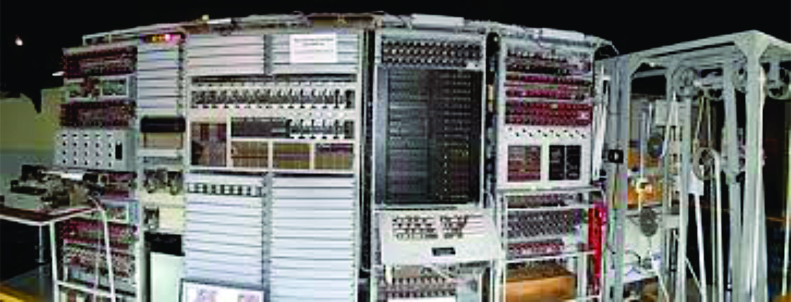
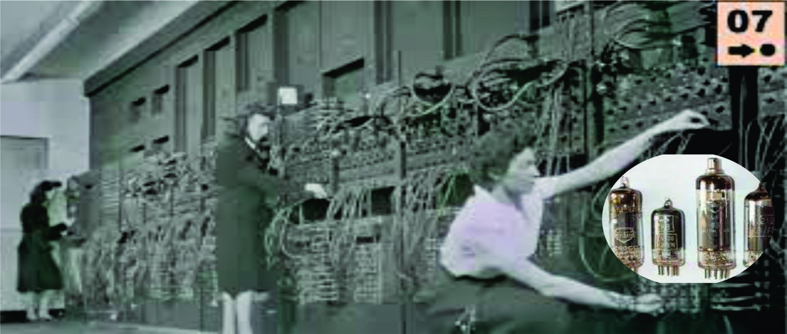
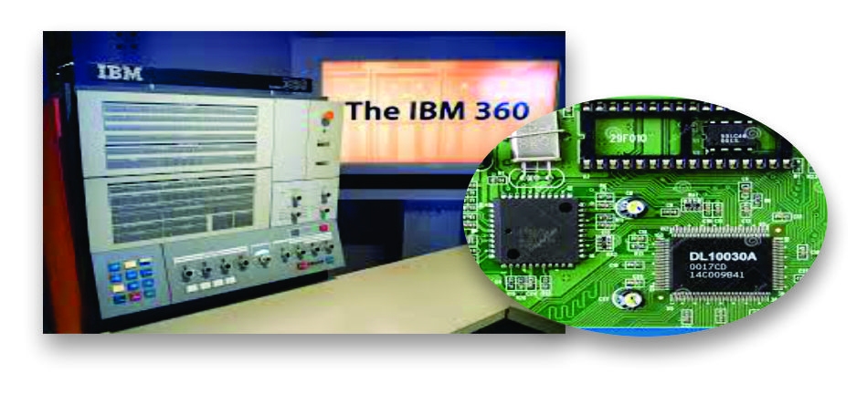
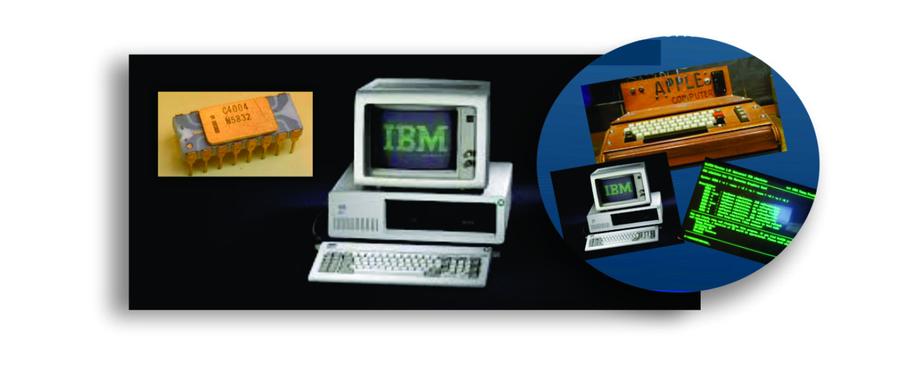
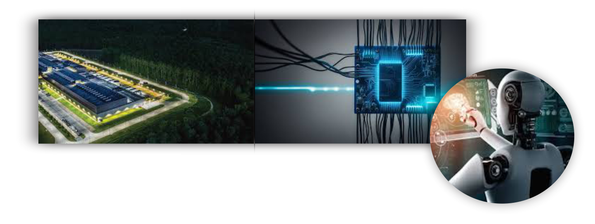

Colossus (1943–1945)
Resumo: Primeiro computador eletrônico programável, desenvolvido em
Bletchley Park, Inglaterra, para decifrar a cifra Lorenz usada pelos nazistas. Usava
fitas perfuradas e cerca de 1.500 válvulas. Trabalhou de forma decisiva em criptoanálise durante
a Segunda Guerra Mundial.
Ponto-chave: Precursor da programação eletrônica; permaneceu em segredo por
décadas.

1ª Geração (1940–1956) — Válvulas eletrônicas
Computadores enormes que usavam válvulas termiônicas (tubos a vácuo). Exemplo
emblemático: ENIAC (1945), que ocupava dezenas de metros quadrados e realizava
cálculos complexos para aplicações militares e científicas.
Características: alto consumo de energia, muito calor, programação manual
(cartões perfurados) e manutenção difícil.

2ª Geração (1956–1963) — Transistores
Transistores (inventados em 1947) substituíram as válvulas: foram menores, mais confiáveis e com
menor consumo. A adoção dos transistores permitiu reduzir tamanho e custo das máquinas, e
melhorou a confiabilidade — tornando a computação mais difundida em empresas e instituições.
Impacto: início da computação comercial (ex.: IBM 1401) e avanços em linguagens
de alto nível.

3ª Geração (1964–1971) — Circuitos Integrados (CIs)
Com os circuitos integrados vários transistores e componentes passaram a ser
fabricados em um único chip. Isso trouxe mais potência, redução de custo e tamanho, além de
permitir sistemas operacionais e multitarefa. Exemplo: IBM System/360.
Característica: padronização de hardware/software; terminais em vez de cartões
perfurados.

4ª Geração (1971–Atual) — Microprocessadores e PCs
O microprocessador (Intel 4004, 1971) reuniu a CPU em um único chip — abrindo caminho para os
computadores pessoais. Exemplos: Apple I (1976), IBM PC (1981). A era marcou a
popularização e a democratização do uso do computador.
Consequências: crescimento da indústria de software, popularização de sistemas
operacionais e surgimento da Internet.

5ª Geração (1990s–Atual) — IA, Nuvem e IoT
A partir dos anos 1990, o avanço da microeletrônica, da internet e dos sistemas de rede deu início à 5ª geração dos computadores, marcada pela busca por máquinas inteligentes, capazes de aprender, se adaptar e tomar decisões.
Impacto: automação, análise em larga escala, mobilidade e integração entre
sistemas — presente na vida cotidiana e na indústria.